Welcome to Viewsletter, your monthly data visualization newsletter. Each issue, we explore different themes to show how thoughtful visualization choices can transform data into clear and compelling insights. This month we focus on how data visualizations can be used to tell stories about elections. From colorful maps to complex graphs, we’ll see how different visualization techniques can be used to effectively represent electoral data.
2024 has been a year full of elections. Indonesia, India, UK, France, Mexico, Iran, United States, South Africa, Thailand, the European Parliament… As the timeline published by Reuters shows, most of the world's major democracies — totalling almost half of the world’s population — have had or will have general elections until the end of the year.
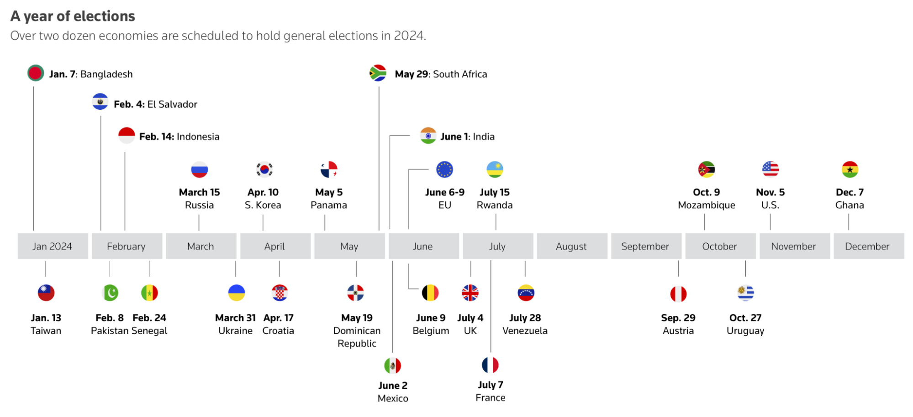
Source: Reuters
Every election is different, and such a wide array of countries will obviously have different political contexts, electoral systems, and voting issues. For example, we take for granted that having an election means that there will be a day in which everyone in a country can vote. Well… that’s not always the case. Take the example of India, whose general elections can last for months, as different regions vote on different days.
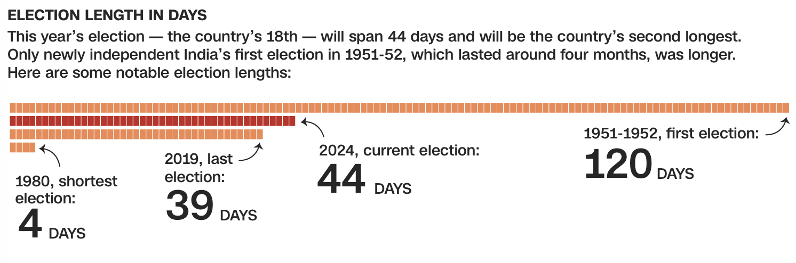
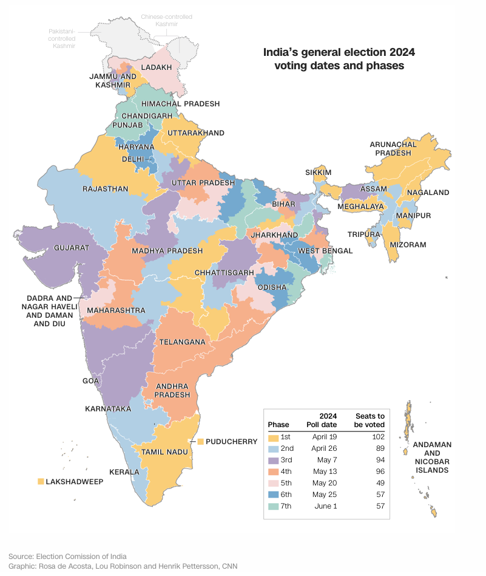
(Questionable color choice) Source: CNN World
This heterogeneity also means that there is a huge diversity of data visualization problems to tackle. In fact, even for the same election, very different techniques can be used to represent the same data. Many of those choices are deliberate and guide narratives in a certain, intentional way. As an example, the Thai website WeVIS did an amazing job mapping different visualization choices of several websites covering the Thai elections. (I suggest using the Safari in-browser translation function, as it also translates the text labels in images).
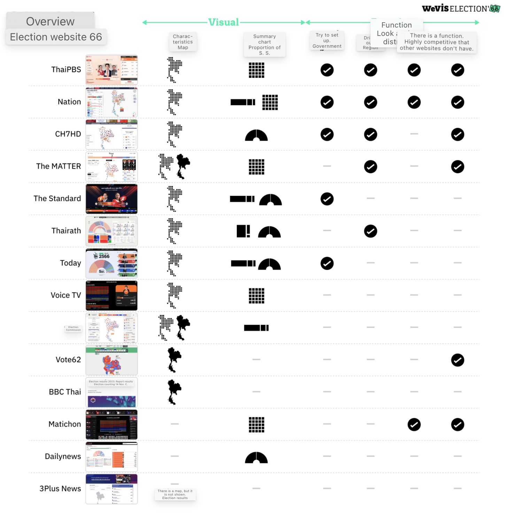
Source: WeVIS
One of the biggest challenges in election coverage is effectively representing the proportion of voters for each candidate on traditional maps. Standard Mercator projected maps often fall short, particularly in areas where population density varies significantly. When vast, sparsely populated regions visually dominate the map, they can inadvertently suggest an overwhelming support for a candidate, overshadowing densely populated areas where the majority of voters actually reside. This creates a misleading narrative, highlighting the necessity for alternative visualization techniques that more accurately reflect voter distribution.
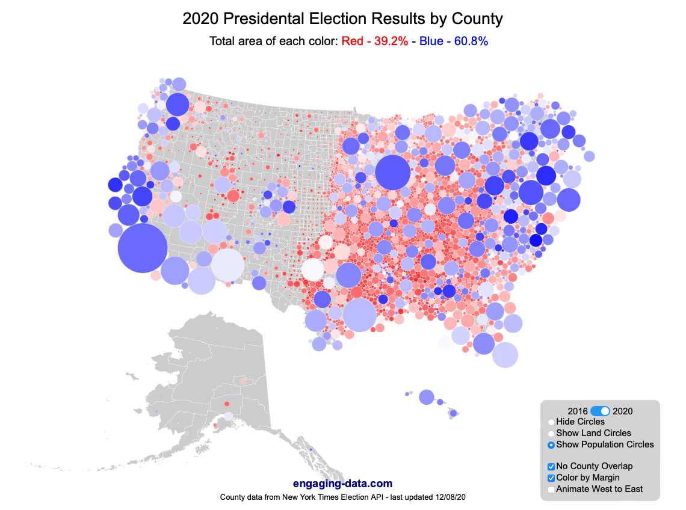
Source: engaging-data.com
In the United Kingdom, the parliamentary electoral system is structured around constituencies that are roughly equal in terms of population but can differ dramatically in geographic size. This means that while each Member of Parliament represents approximately the same number of constituents, the physical areas of these constituencies can range from very small urban districts to vast rural regions. Furthermore, the UK uses a "first past the post" (FPTP) voting system, in which the candidate who receives the most votes in a constituency wins the seat, regardless of whether they achieve an outright majority. To visualize the election results it is important then to represent constituencies consistently using the same visual units.
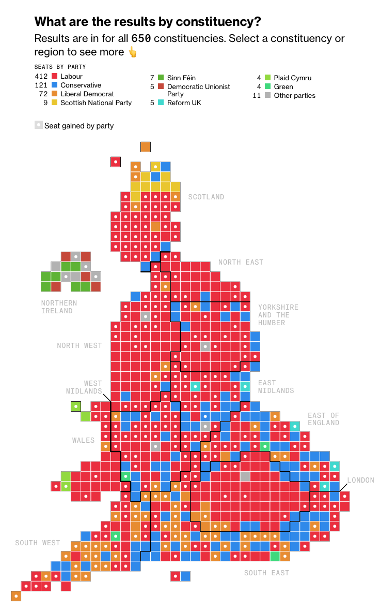
Source: Bloomberg
A similar example of using a grid to represent constituency results can be found in Le Monde's article about the French legislative election results. In this case, a hexagonal grid is used alongside icons that indicate whether a constituency has shifted towards a nearby or distant political family.
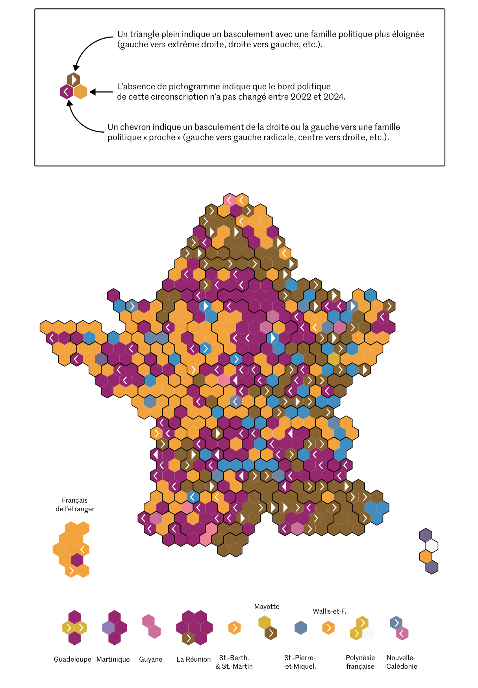
Source: Le Monde
An example workaround of this issue is The Economist’s UK election forecast maps. In this case, a geographically accurate map of Britain is used, with the constituencies colored by the winning party. However, that map is layered on top by a set of circles that are in the closest possible position of the geometric center of the constituencies. Obviously, in denser regions (like London), this results in the circles being not even on top of their own constituencies, but the clever circle hover interaction that highlights the borders of the respective constituency solves this problem by providing a clear connection between circle and geographic entity. Interestingly, the article then focuses on specific regions, guiding the reader on a more in-depth analysis of the maps.
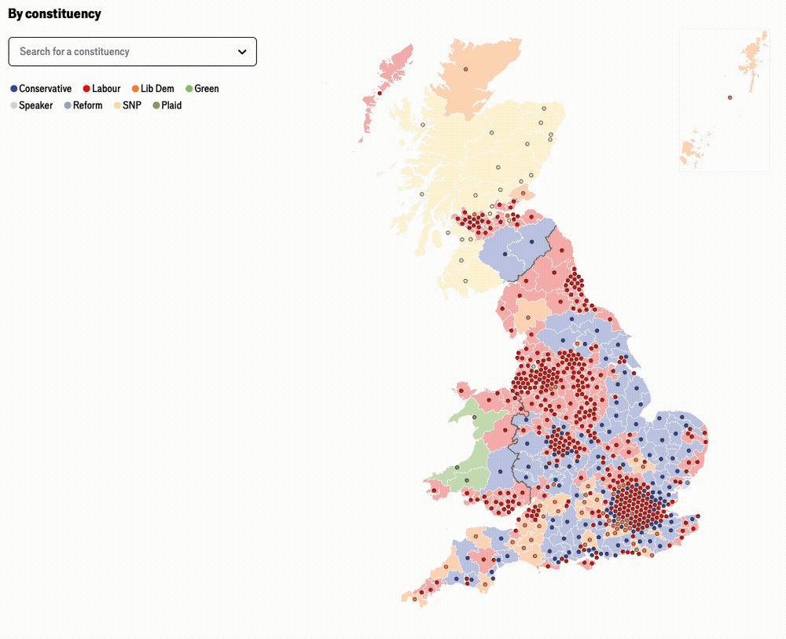
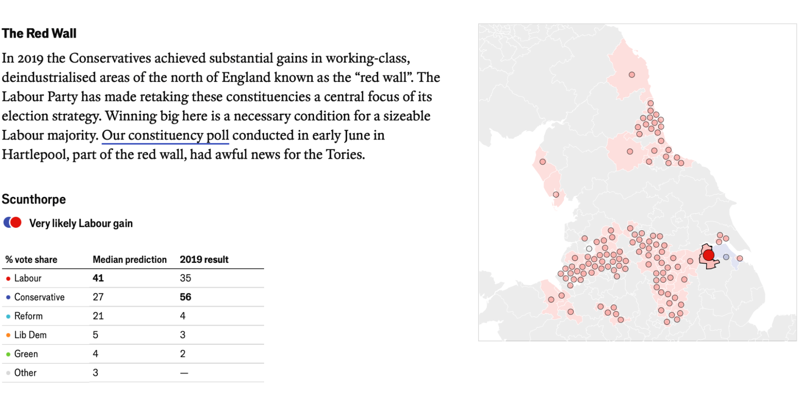
Source: The Economist
The previously mentioned WeVIS article on online coverage of the Thai elections provides an interesting comparison between representations of results in a map. It divides maps that use the geographic area of constituencies and those that use the same visual unit for all constituencies. This last category is further divided by the shape of the visual unit used (circle, square or diamond).
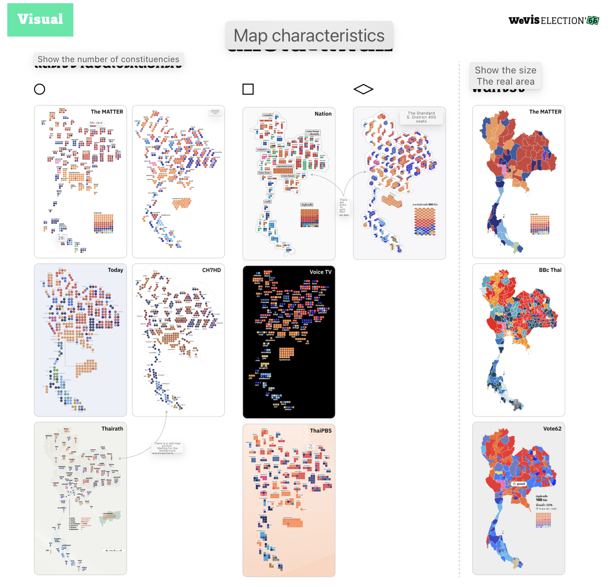
When it comes to understanding elections, interpreting poll data and communicating uncertainty and possible outcomes is central. However, journalistic coverage about polls still falls many times in over simplistic conclusions like “Candidate X has an advantage over Y” without giving odds to the outcomes, or “Party Z has n% of the votes”, when in fact vote shares from polls are ranges, and what is highly probable is that the results will fall into those ranges. (For more about this, I recommend Nate Silver’s book).
FiveThirtyEight is usually referred to as a good example when it comes to statistical communication. In their article about the US 2024 Presidential Election, outcome distribution is central. 100 simulations are performed and then arranged horizontally following an electoral vote margin axis. It is easy to understand that outcomes resulting from more simulations have bigger odds of happening than cases that appear less often.
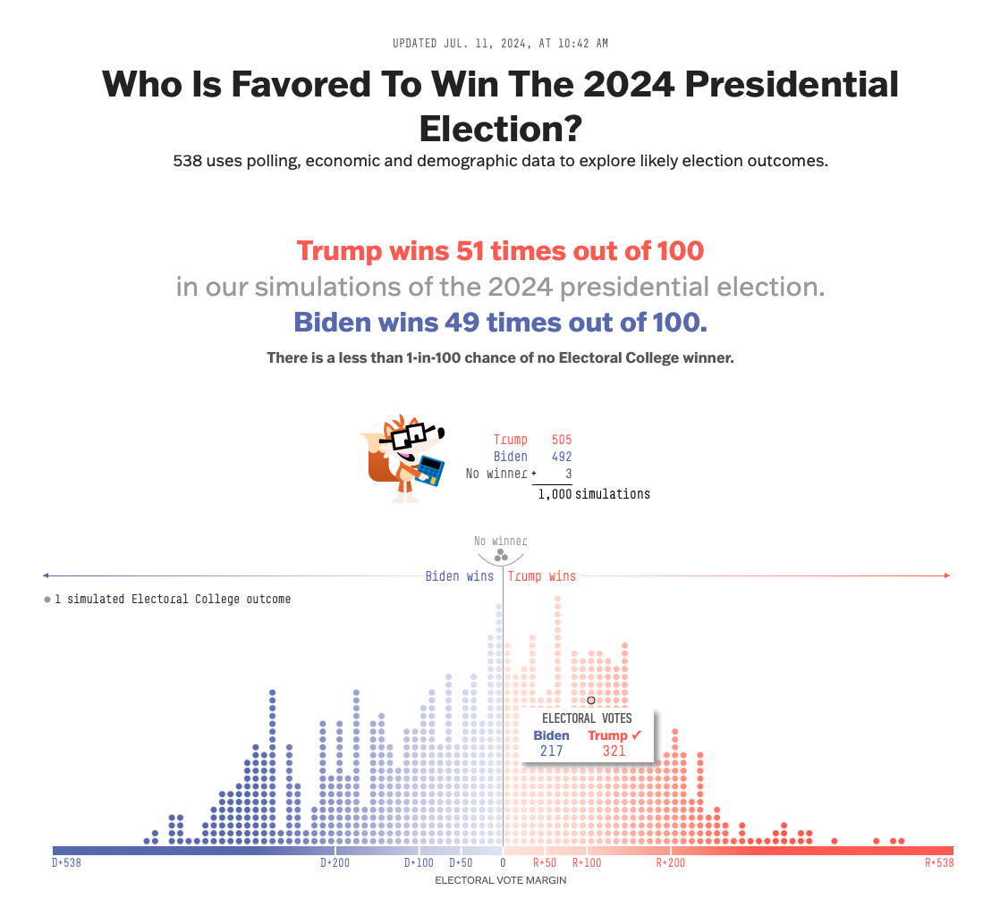
Source: 538
The Economist opted for a simplified version of a boxplot, with lowest, highest and median outcome results for each party, color hues representing probability, an indication of number of MPs needed for majority, and a comparison with last election’s results. Instead of telling a story around the median result, sometimes mistaken as the most probable result, ranges and outcome probabilities are central in this visualization.
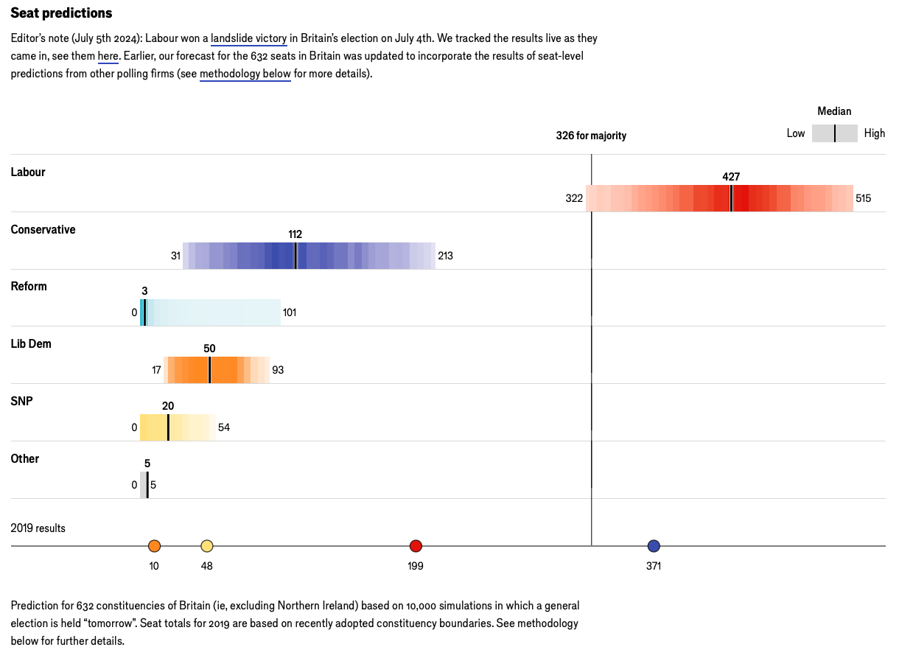
Source: The Economist
An useful exercise that is often overlooked is to compare poll forecasts with the actual election results. In the article Which German party is the most unlucky when it comes to election dates? by Datawrapper, a graph for each party shows the difference between average forecasted voting share and actual voting share in the following election. The graphs are annotated with useful information about events that might have contributed to variations in this difference.
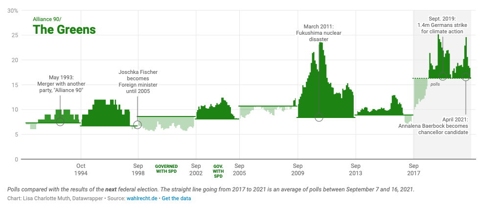
Source: Datawrapper
When it comes to visualizing change, it is important to consider both the temporal and spatial dimensions. The Público’s coverage of the Portuguese legislative elections is a good example of this, as it shows how the political landscape has evolved over time and across different regions.
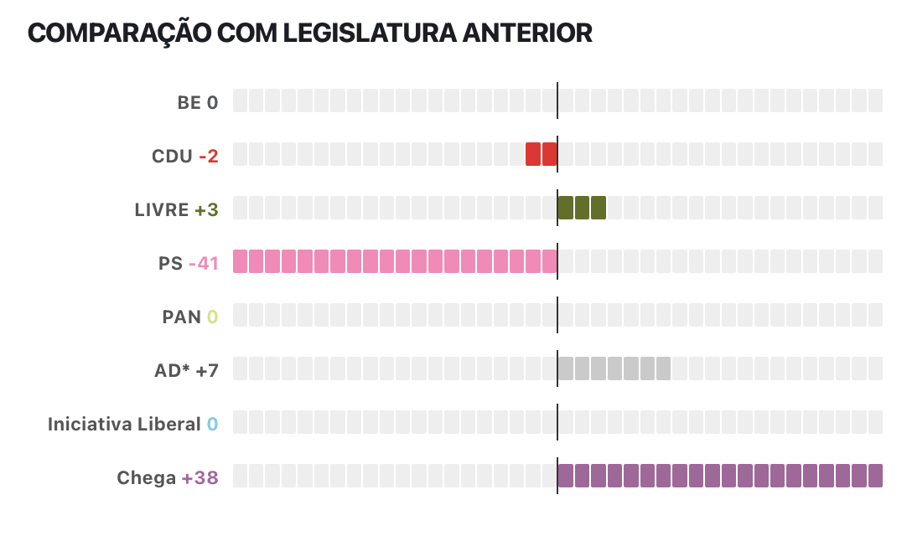
Source: Público
Bloomberg’s coverage of the UK Elections uses a similar approach, showing how the political landscape has changed over time and across different regions. This is particularly useful for understanding the impact of recent events on the election results.
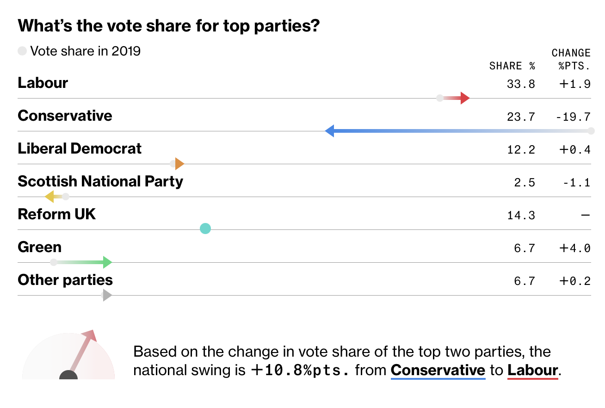
Source: Bloomberg
A different example is Bloomberg’s coverage of the French elections, which uses a ternary chart to show how the withdrawal of candidates in three-way runoffs has affected the final results. This is a unique approach that highlights the importance of strategic voting in the French electoral system.
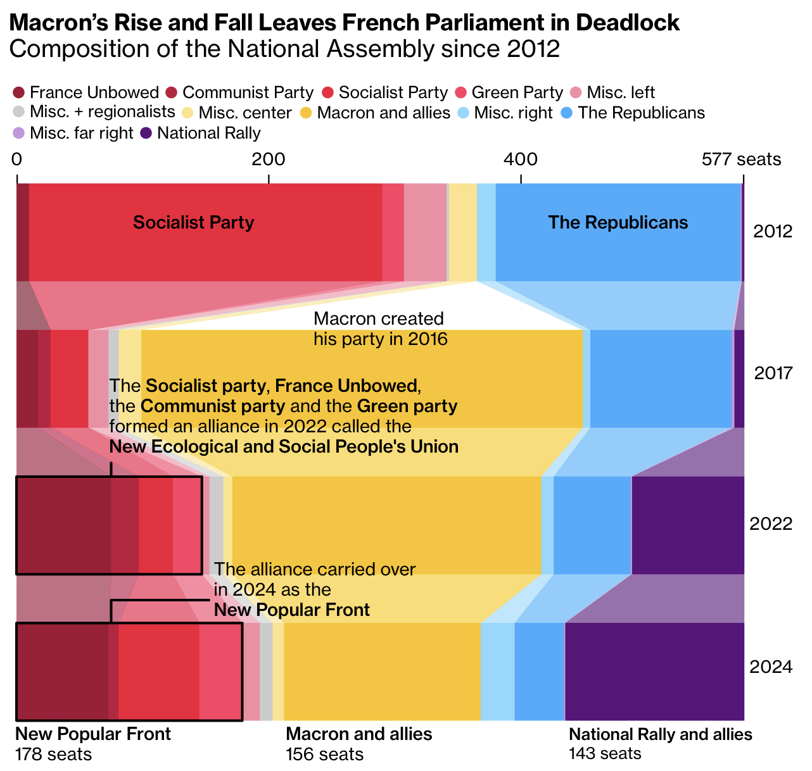
Source: Bloomberg
The New York Times coverage of the UK elections uses a similar approach, showing how the political landscape has changed over time and across different regions. This is particularly useful for understanding the impact of recent events on the election results.
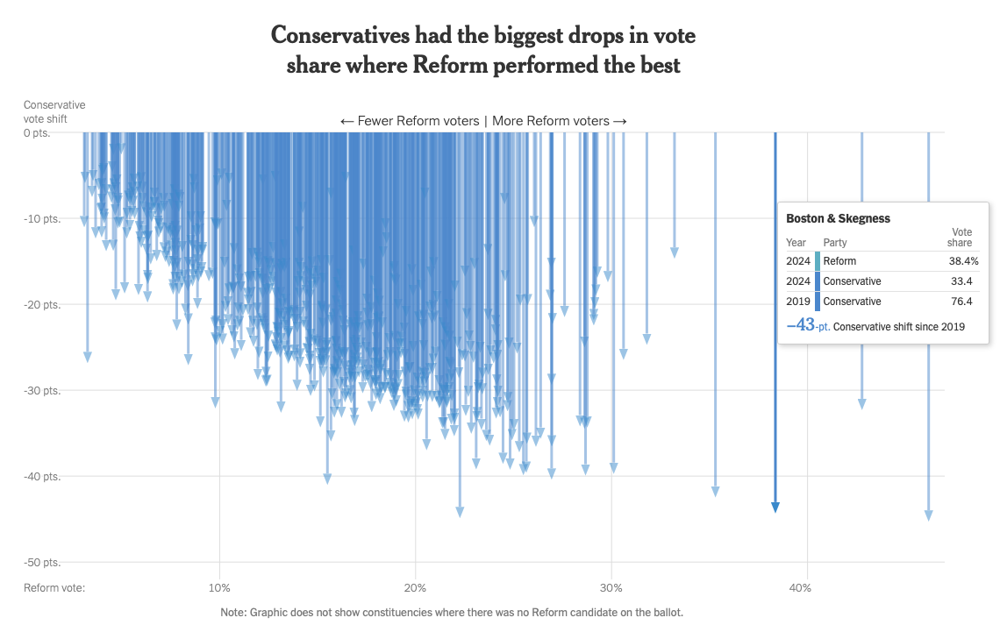
Source: The New York Times
Bloomberg also focuses on the rise of Reform UK, showing how this new party has affected the election results. This is a good example of how new political movements can disrupt the traditional political landscape.
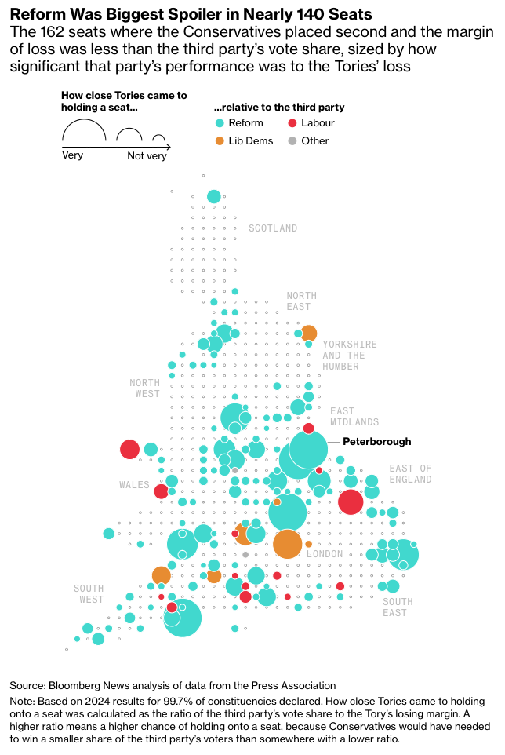
Source: Bloomberg
Finally, by looking at change from a spatial perspective, it is possible to uncover specific regional trends. The New York Times coverage of the UK elections is a richer example, since instead of just showing a general national trend, it uncovers specific and very defined regional trends. As Belgium is made up of three very different political entities (Flanders, Wallonia and Brussels) with separated political parties, it is interesting to note that the ones typically more on the left side of the spectrum, Wallonia and Brussels, have moved very noticeably to the right, while the historically right-wing Flanders has moved to the left, even if not in the same degree.
Source: @karim_douieb
There is no question that spatial variables are of huge importance when it comes to political identification and voting. In this section I will showcase some examples of projects that use maps to tell different election stories.
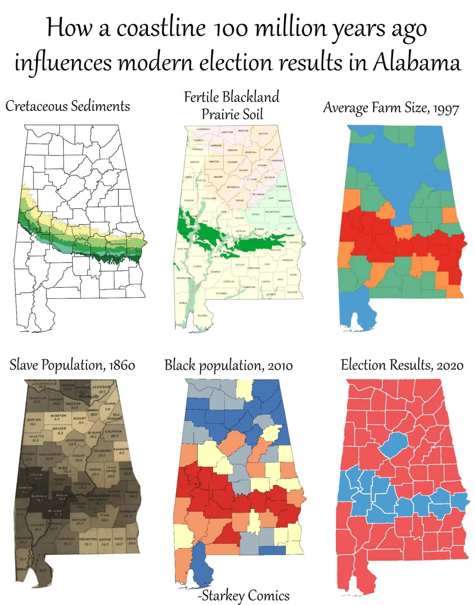
Source: Reddit
It is impossible to talk about geography in elections without talking about constituency borders. Somewhat overlooked in proportional electoral systems (like the Portuguese one), this issue becomes election-defining in systems with uninominal electoral circles. The way districts are shaped is so determinant to the results of elections that there is an incentive for malicious actors to change them for self-benefit. Gerrymandering, or the “political manipulation of electoral district boundaries with the intent to create undue advantage for a party, group, or socioeconomic class within the constituency” is a very important issue, especially in US politics.
The best didactic and interactive example I’ve seen to explain the real power of gerrymandering is The New York Times’ interactive game Can You Gerrymander Your Party to Power?. It puts the reader into the shoes of a district designer, with the sole purpose of maximizing its own election result.
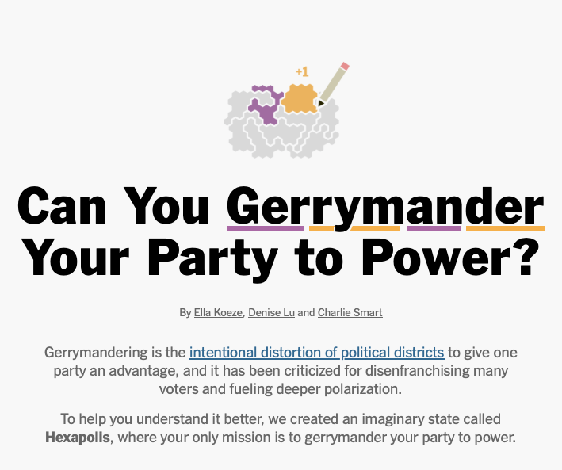
Source: The New York Times
The Guardian uses scrollytelling to show how Republicans gerrymandered North Carolina’s electoral district borders to dismantle a widely democratic district. The interactive nature of the article helps readers understand the impact of gerrymandering on election outcomes.
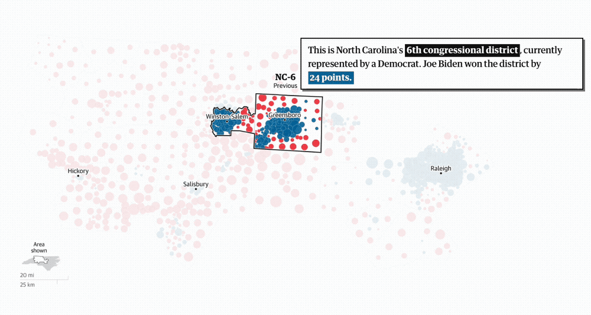
Source: The Guardian
The New Yorker newspaper The City published an interactive map that allows users to explore the new City Council district boundaries. This tool helps residents understand how redistricting affects their representation.
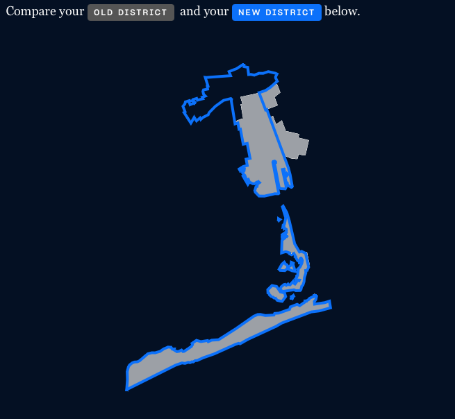
Source: The City
Redistricting can also happen for different reasons, such as population changes. The Pudding’s interactive visualization shows how the European Union’s regions have changed over time, highlighting the impact of demographic shifts on political boundaries.
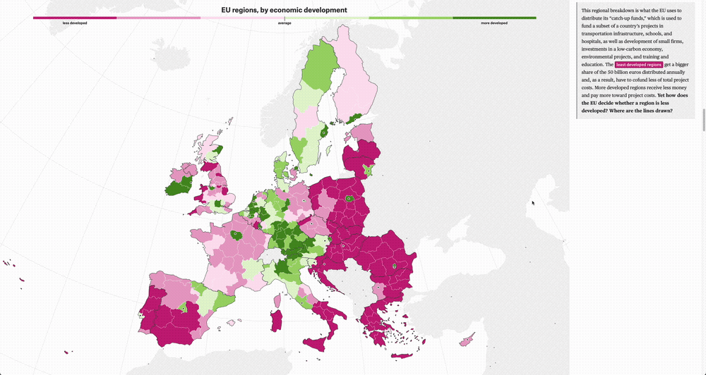
Source: The Pudding
Finally, it is impossible not to talk about maps without mentioning the detailed visualizations of election results. El País provides a comprehensive map of the Spanish general elections, showing results down to the street level. This level of detail helps readers understand the geographic distribution of votes.
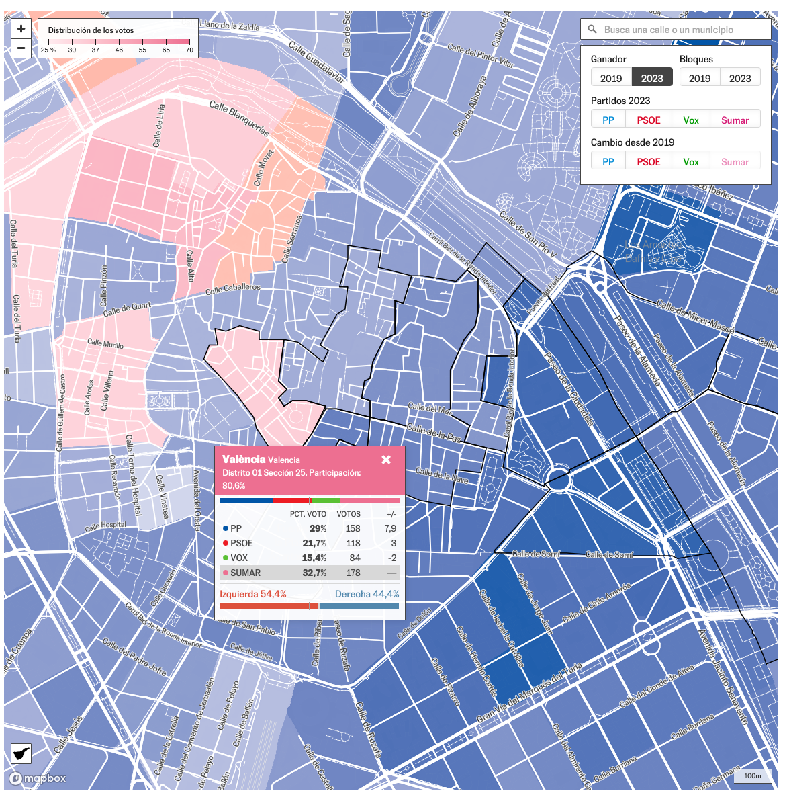
Source: El País
A wider-picture map also from El País shows how the regions of Europe have voted in the European Parliament elections since 1999. This historical perspective provides insights into long-term political trends across the continent.
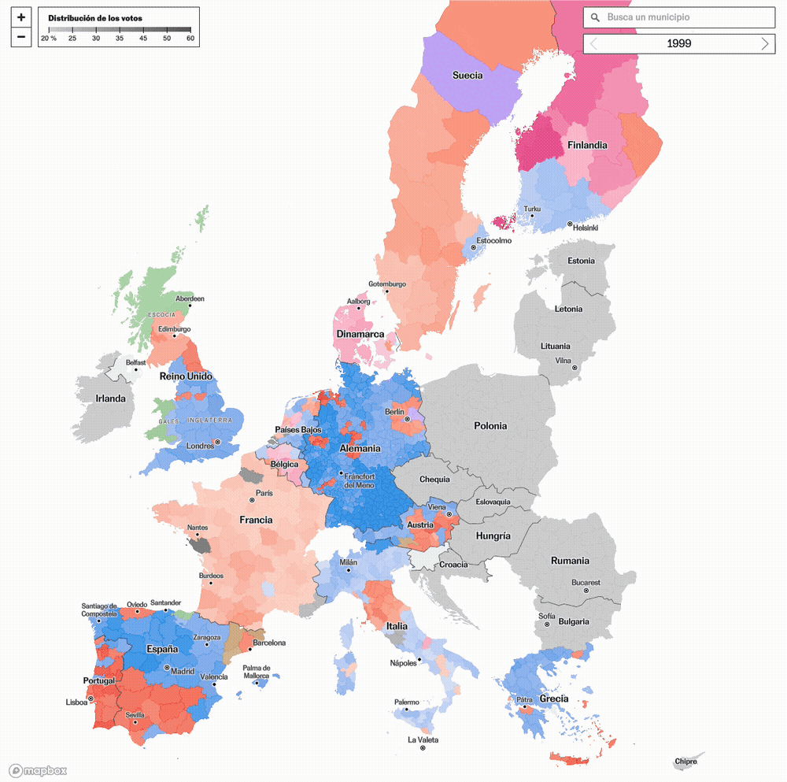
Source: El País
Extra stuff that didn’t fit any other categories but are still worth mentioning:
Due to the uncommon two-round system in French Legislative elections, Bloomberg provides a detailed analysis of how the results change between the first and second rounds. This helps readers understand the dynamics of runoff elections.
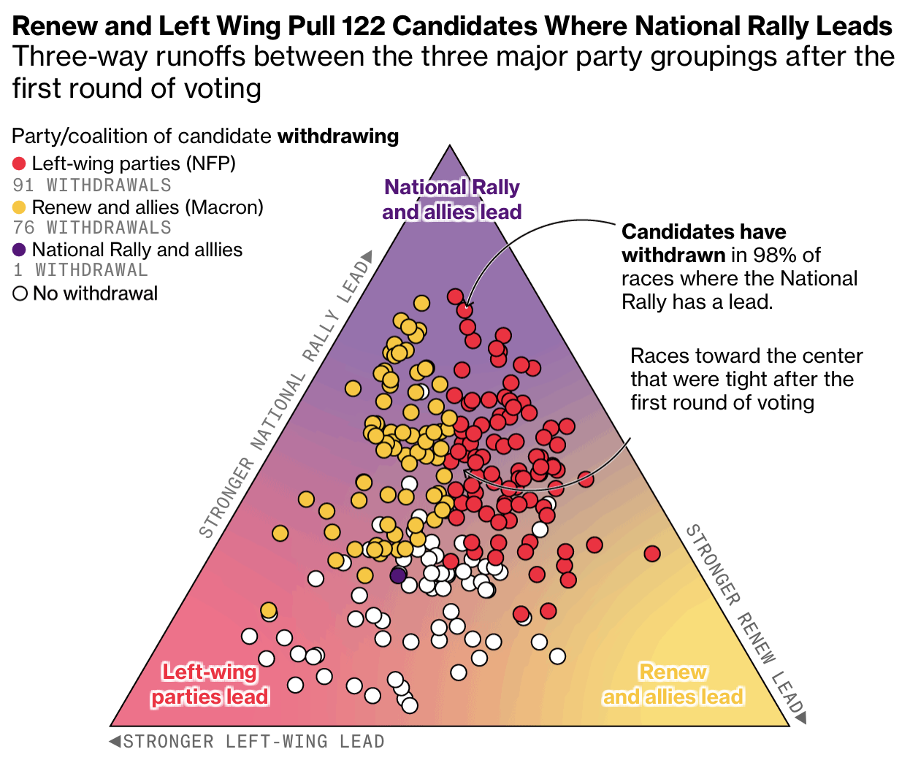
Source: Bloomberg
Cute visualizations for the NLP analysis of political debates can be found in La Nacion’s coverage. They show how candidates use language and which topics they focus on during debates.
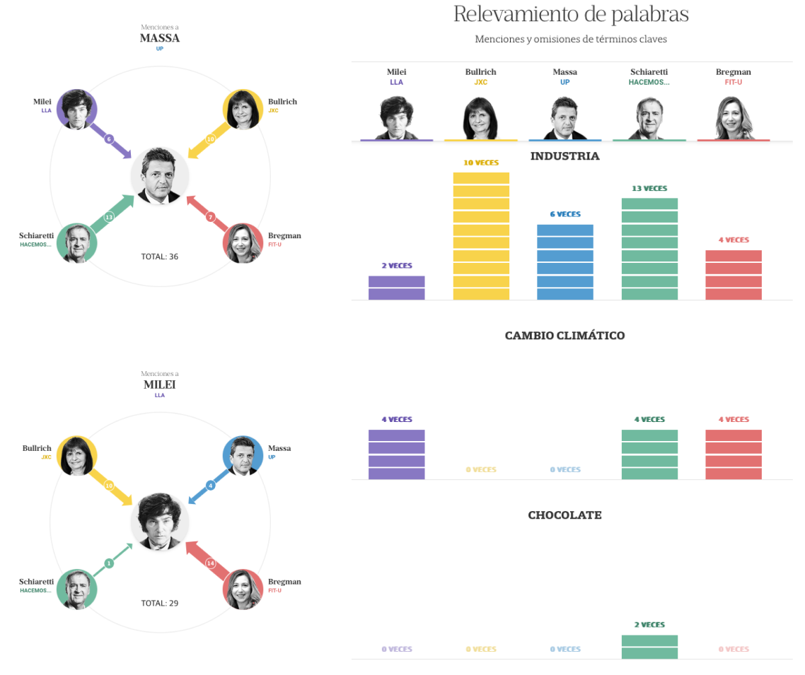
Source: La Nacion